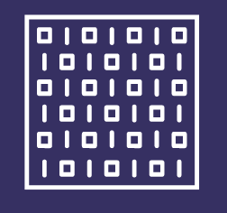

Reset all data
Arty A-7
Arty A-100
Zybo Z-7
Generate Bitstream
Add Design Sources
source.v
source.v
Map Design Constraints
Add Virtual Clock
Clock Frequency
MHz
Progress Indicator
Bitstream File
output.bit